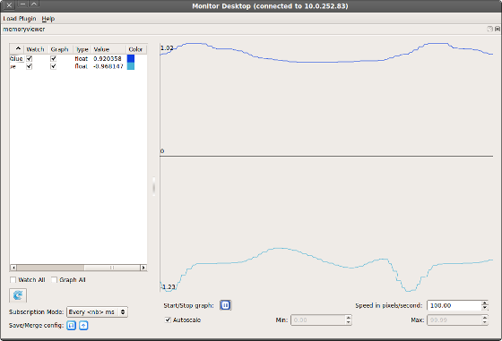

Memory viewer¶
This plugin allows you to watch the data held by the ALMemory module of a given NAOqi. Number-like data evolution can also be plotted. This is very useful to diagnose behaviors through the internal data they use. You can also follow hardware data.
Architecture overview
{kind=link}
There are a lot of data keys in ALMemory. That is why it is recommended to select a restricted set of keys to watch, saved as an XML configuration file, instead of gathering all the values, which is much slower.
When you load the Memory viewer plugin, as explained in How to launch a Monitor plugin section, several possibilities are offered:
{kind=link}
| Name | Description |
|---|---|
| New configuration file | select a new set keys to track. |
| Open configuration file: | select a previously saved set of keys. |
| Do not use a config file (slow) | select every data key and filter them manually. |
Once you have your configuration set up, the plugin will load its main window:
{kind=link}
Plot Widget¶
On the right side of the widget, you can see the plot viewer. Every key which option Graph is checked will be shown in this plot.
Managing the Key list¶
On the left side of the widget, is displayed the list of keys defined in the configuration file. The list shows several columns:
- Name
- Watch: whether to track the value or not.
- Graph: whether to add the value to the plot. Overrides Watch, as the value must be tracked to be plotted.
- Type: the value type. Can be bool, int, float, string or invalid.
- Value: the value.
- Color: the color of the curve representing the key values in the plot.
Below the list, you can also select Watch all or Graph all, to easily have an overview of all the keys.
Managing the Subscription Mode¶
- Subscription Mode controls the refresh rate of the key list values. When selecting the mode “Every <nb> ms”, you will be prompted the refresh period you like. Selecting the mode “No subscription” disables automatic update of the values.
- The blue arrow button allow you to refresh manually the values of the list. This is useful whenever you set the Subscription mode to “No subscription”.
Note
The subscription period parameter does not affect the plot scroll. It may only affect plot resolution.
Managing configuration file¶
You can save every change you have done on this panel by clicking the save button in the Save/Merge config section, at the bottom left of the widget.
You can also import configuration files using the second button, so that it is merged with your current configuration.
Managing the plot¶
Along with this view, few options below are available:
- Start/Stop graph: start / stop value plotting.
- Speed in pixel/second: set here the plot auto-scrolling speed.
- Autoscale: when checked, the widget will zoom the plot to fit exactly the minimum and maximum values displayed. Min and Max are enabled only when Autoscale is disabled, and allows you to set the vertical bounds of the plot manually.